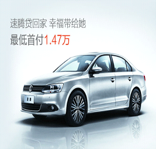

新闻来源:2018-10-31网易体育 发布时间 : 00:11:00 作者：毛毛豆豆雨 参与评论400人
二手车行业领军者！没有中间商赚差价，更多个人卖家,更多个人买家，瓜子二手车直卖网,为广大车主提供免费上门评估， 二手车帮卖，代办过户等服务，专业评估师团队， 整车全面检测，30天可退，瓜子全程陪同交易！买卖二手车拨打——400-069-6530.

目前，瓜子二手车网已与超过20个汽车品牌商建立合作，覆盖46个主流车型，并在长春，石家庄，成都，东莞，南京5个城市建立了线下中心仓，服务覆盖全国 33个主流城市，瓜子二手车通过与汽车主机厂商，经销商无中间环节的合作，拿到一手优质车源，为消费者提供低首付融资租赁的新型用车，购车服务，与传统的汽车贷款服务相比，毛豆新车网有首付低，月供低，门槛低货贷快，省心省力四大特点。
毛豆新车网将始终致力于通过大数据，人工智能等先进技术手段，对汽车的生产，流通与销售过程不断的进行升级改造，重塑业态结构与生态圈，全力打造汽车领域线上服务+线下体验深度融合的汽车零售新模式。
我爱<guazi>我爱<car> 地址：北京市顺义区南法信政府西侧
互联网违法或不良信息举报联系方式，邮箱：jubao@guazi.com 服务监督热线：400-066-8780(周一至周日9:00-21:00)
版权所有©京备16036420号